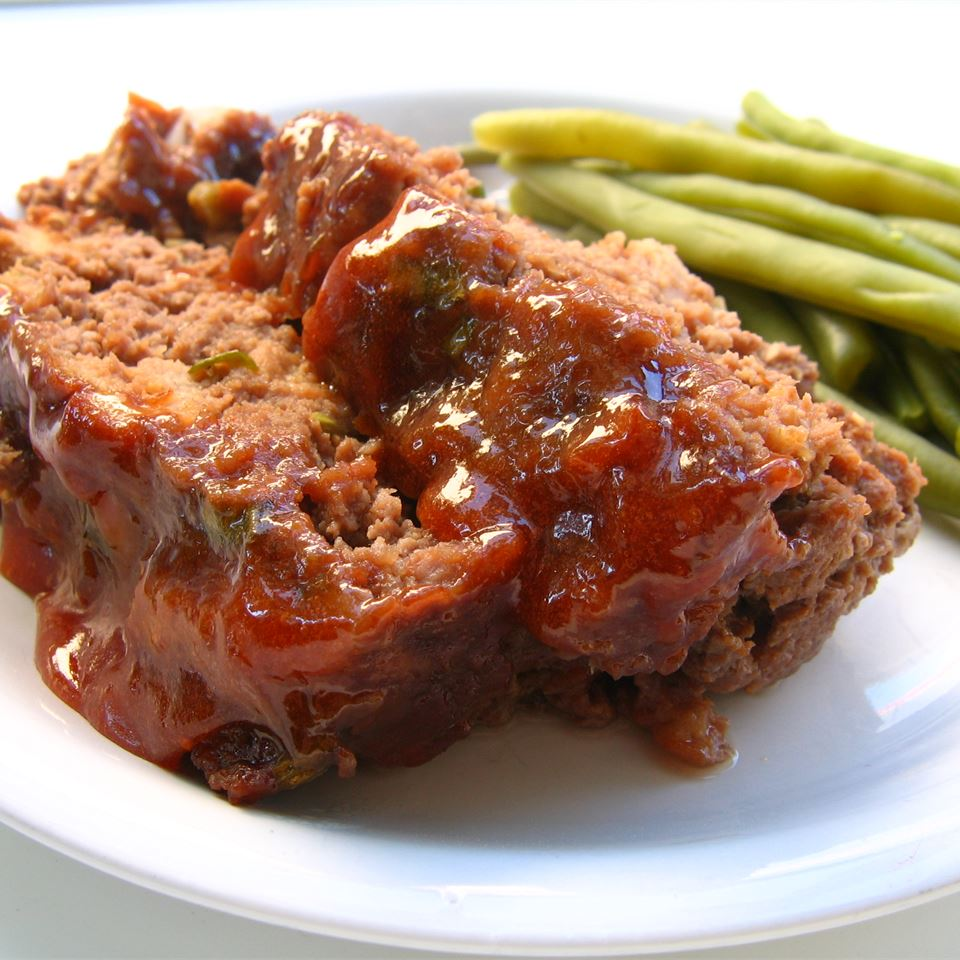

Glazed Meatloaf

Description
This meatloaf's flavor is enhanced with beef bouillon and a brown sugar glaze with a hint of lemon juice.
Ingredients
Sauce
- 1/2 cup ketchup
- 1/3 cup brown sugar
- 1 tablespoon lemon juice
- 1 teaspoon dry mustard
Loaf
- 1/2 pack saltine crackers, crumbled
- 1 medium onion, diced
- 2 eggs, beaten
- 1 cube of beef bouillon, crumbled
- 1/2 teaspoon oregano leaves
- 1/2 teaspoon celery salt
- 1/2 teaspoon garlic salt
- 1/2 teaspoon black pepper
- 3 tablespoons lemon juice
- 2 lbs ground chuck 80/20
Steps
- Preheat oven to 350 degrees F (175 degrees C).
- In a small bowl, combine ketchup, brown sugar, 1 tablespoon lemon juice, and dry mustard until smooth.
- In a large bowl combine ground chuck, saltine crackers, onion, eggs, bouillon, oregano leaves, celery salt, garlic salt, black pepper, 3 tablespoons lemon juice, and 1/3 cup of ketchup mixture until well mixed. Form into a loaf and place in a 9x5 inch loaf pan.
- Bake 1 hour. Pour off fat. Pour reserved ketchup mixture over loaf. Bake 10 minutes more.